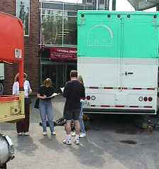
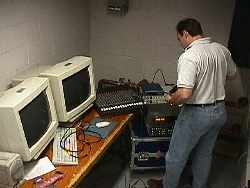
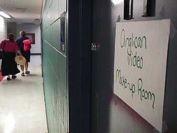

Backstage: Television Coverage
Other Backstage features: Television | Internet | Onsite
Each night at 7pm (ET/PT) for five nights,
we broadcasted a half-hour show on Vision TV.
Putting the show together backstage were producer Lisa Barry, Karen Walters, and Ghideon Musa (seen in
photo, right). They managed an extensive setup including four studio cameras, a
mobile news unit, a large production trailer, and coordinating the satellite uplinks.
Images from the floor of Synod were fed directly to
the production trailer parked outside the Plenary hall. Edits were made on the fly
and just in time for the tight deadline to reach Vision TV for airing that night.
These three have been covering General Synod
for years, and form the national church's award-winning Anglican Video production unit.
 |
Television producer Karen Walters |
 |
A technician sets up the audio control |
 |
The make-up room onsite at General Synod 1998 |